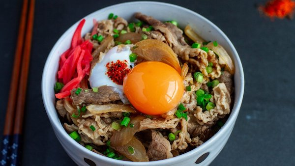

How to Make Authentic Japanese Gyudon

Gyudon or Japanese Beef Bowl Recipe
Savory and delicous authentic japanese beef bowl is a very simple comfort food to make. There are several ingredients that may not be available in regular supermarkets such as mirin or cooking sake.
These are often found in japanese or Asian grocery stores. The rest of the ingredients are commonly found in most grocery stores. LETS BEGIN!
Ingredients
- 1 lb of Thinly Sliced fatty cuts of beef
- 1/4 tbs Mirin
- 1/4 tbs Cooking Sake
- 1/2 tbs Brown Sugar
- 1/4 tbs Dashi
- Half a White Onion
- 1/2 tbs Soy Sauce
- Cooked Rice
- Cooking Oil
Cooking Method
- Begin by heating the pan to high with some cooking oil. Quickly sear the meat until you get a nice brown color then set aside.
- Next make the sauce by mixing the mirin, brown sugar, cooking sake, dashi (mixed with water per instructions on bottle) and soy sauce into a small bowl.
- Heat up the pan to high and mix in the sauce along with the onions cut lengthwise. Stir occasionally until the sauce is in a soft boil then add your browned meat.
- Cover the pan and lower the heat to medium. Stir the mixture occasionally until the onions are translucent (approximately 10 mins).
- Allow the beef to rest for 5 mins before serving with a bowl of rice.
- Serve with plenty of sauce on the rice and ENJOY!
RETURN HOME
BACK TO RECIPES